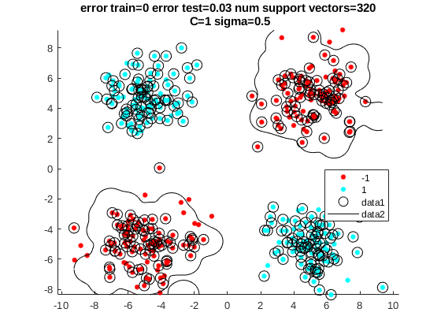
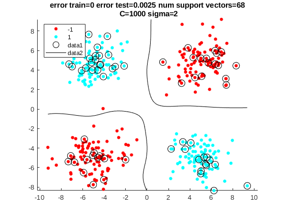
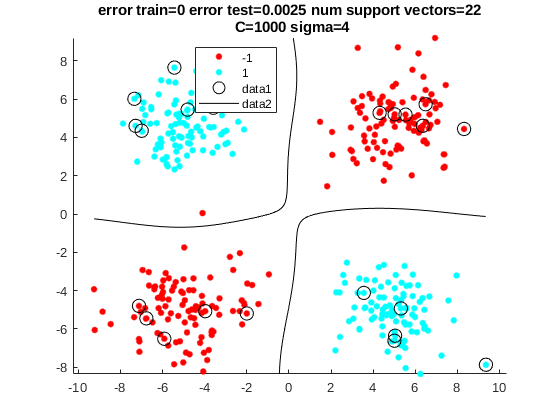
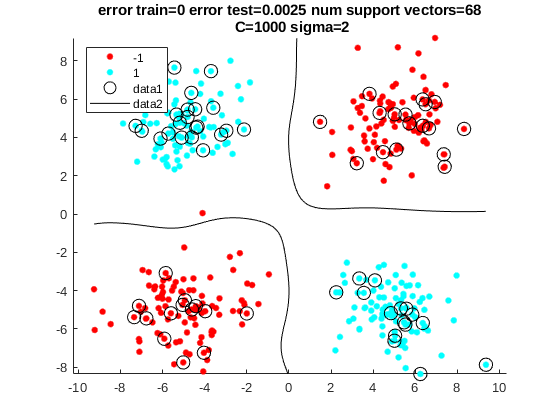
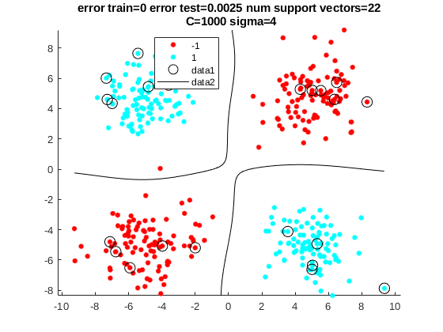
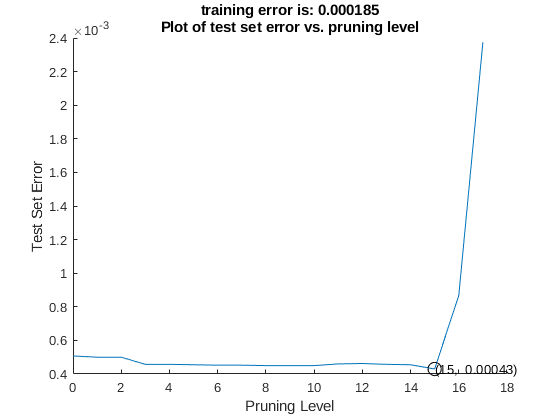

Contents
- Tai Duc Nguyen - ECEC 487 - 10/26/2019
- Problem 4.6 Page 248
- Use example code for plotting the support vectors from https://www.mathworks.com/help/stats/fitcsvm.html#bvdn8ei-1
- Decision Tree Exercise
- Conclusions from previous Exercises
- [Function] Using the data generation procedures from textbook CX 4.2 Page 244-245
- [Function] Using the SVM Classifier from textbook CX 4.5 Page 247 with modifications
Tai Duc Nguyen - ECEC 487 - 10/26/2019
close all; clear all;
Problem 4.6 Page 248
m = [-5 5 5 -5; 5 -5 5 -5]; s = 2; N = 100; randn('seed',0); [x1, y1] = data_generator(m,s,N); randn('seed',10); [x2, y2] = data_generator(m,s,N); tol = 0.001; C = [1 100 1000 1000]; sigma = [0.5 1 2 4];
Use example code for plotting the support vectors from https://www.mathworks.com/help/stats/fitcsvm.html#bvdn8ei-1
d = 0.02; [x1Grid,x2Grid] = meshgrid(min(x2(1,:)):d:max(x2(1,:)),... min(x2(2,:)):d:max(x2(2,:))); xGrid = [x1Grid(:),x2Grid(:)]; for i=1:length(C) [svm,pe_tr,pe_te] = SVM_class(x1,y1,x2,y2,tol,C(i),sigma(i)); [~,scores1] = predict(svm,xGrid); figure hold on h(1:2) = gscatter(x2(1,:),x2(2,:),y2); h(3) = plot(x2(1,svm.IsSupportVector),x2(2,svm.IsSupportVector),'ko','MarkerSize',10); % Support vectors contour(x1Grid,x2Grid,reshape(scores1(:,2),size(x1Grid)),[0 0],'k'); title({['error train=',num2str(pe_tr),' error test=',num2str(pe_te),... ' num support vectors=',num2str(length(svm.SupportVectors))],... [' C=',num2str(C(i)),' sigma=',num2str(sigma(i))]}); hold off end
  
  Decision Tree Exercise
% This excercise will be completed with a larger dataset because the % prunning effect is not easy to be seen when the dataset is small. randn('seed',0); [x1, y1] = data_generator(m,s,N*1000); randn('seed',10); [x2, y2] = data_generator(m,s,N*1000); maxSplit = 100; dectree = fitctree(x1',y1','MaxNumSplits',maxSplit); train_res = predict(dectree,x1'); pe_tr = sum(y1'~=train_res)/length(y1); L = max(dectree.PruneList); er = zeros(max(dectree.PruneList),1); test_res = predict(dectree,x2'); pe_te = sum(y2'~=test_res)/length(y2); er(1) = pe_te; for j=2:max(dectree.PruneList) dectree = prune(dectree,'level',1); test_res = predict(dectree,x2'); pe_te = sum(y2'~=test_res)/length(y2); er(j) = pe_te; end figure hold on er_t = 0:1:L-1; plot(er_t,er) title({['training error is: ', num2str(pe_tr)],... ['Plot of test set error vs. pruning level']}) xlabel('Pruning Level'); ylabel('Test Set Error') [v,i] = min(er); plot(er_t(i),er(i),'ko','MarkerSize',10); text(er_t(i),er(i),['(' num2str(er_t(i)) ', ' num2str(er(i)) ')'])
Conclusions from previous Exercises
The Support Vector Machine algorithm is evaluated with different number of C (box constraint) and sigma (kernel scale). It is apparent that increasing C will result in a lesser number of support vectors. The same relationship also applies for sigma.
% From the experiment above, the lowest error test of the SVM is 0.0025 % with a dataset of 400 points. % However, the Decision Tree algorithm results in a much lower error rate % 0.00043 for a larger dataset of 400*1000=400,000 points. % With regards to the Decision Tree algorithm, the pruning level does have % an impact to the accuracy, however, dependent on the split-level and the % minimum leaf size after training because if the depth of the tree is % shallow, then removing leaves will remove necessary decisions. Hence, the % code above chose a large dataset and the maximum number of split is high % (100).
[Function] Using the data generation procedures from textbook CX 4.2 Page 244-245
function [x,y] = data_generator(m,s,N) S = s*eye(2); [l,c] = size(m); x = []; % Creating the training set for i = 1:c x = [x mvnrnd(m(:,i)',S,N)']; end y=[ones(1,N) ones(1,N) -ones(1,N) -ones(1,N)]; end
[Function] Using the SVM Classifier from textbook CX 4.5 Page 247 with modifications
function [svm,pe_tr,pe_te] = SVM_class(X1,y1,X2,y2,tol,C,sigma) svm = fitcsvm(X1', y1','KernelFunction','rbf',... 'KernelScale',sigma,'BoxConstraint',C,... 'Solver','SMO','KKTTolerance',tol,... 'IterationLimit',20000,'CacheSize',10000); %Computation of the error probability train_res = predict(svm,X1'); pe_tr = sum(y1'~=train_res)/length(y1); test_res = predict(svm,X2'); pe_te = sum(y2'~=test_res)/length(y2); end